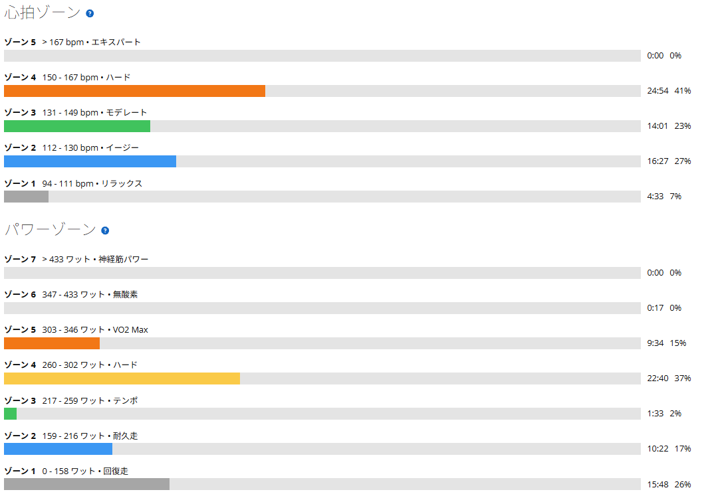

4本目に入りたくなかった8分走。290Wの壁と実走との差
今日は、少し前に失敗した8分インターバルに再挑戦した。10月31日は1本目を約296Wで8分走ったものの、2本目は約1分半で終了。あのときは直前の高強度練習が続いていて、脚に疲労が残っていた可能性もある。でも、失敗は失敗である。今回はとにかく4本揃えることを目標に、少し出力を抑えてスタートした。

約32km・NP257W・TSS79
- 全体31.94km / 1時間00分19秒 / 室内4本ローラー（GT-ROLLER Q1.1）
- 負荷平均229W / NP257W / IF0.890 / TSS79.0 / FTP設定289W
- 心拍・回転平均138bpm / 最大162bpm / 平均83rpm
- メイン8分×4本 / レスト各2分 / 4本平均292.5W（体重72kg換算で約4.06W/kg）

4本、ほぼ同じ出力
| 本数 | 平均パワー | W/kg | 心拍平均 | 回転 |
|---|---|---|---|---|
| 1本目 | 294W | 4.08 | 147bpm | 88rpm |
| 2本目 | 291W | 4.04 | 150bpm | 87rpm |
| 3本目 | 293W | 4.07 | 153bpm | 82rpm |
| 4本目 | 292W | 4.06 | 156bpm | 84rpm |
出力は291〜294Wの幅に収まり、心拍は1本ごとに3拍ずつ上がっていった。数字だけ見れば見事な横並び。だが、数字は私の悲鳴までは記録してくれない。
4本目に入りたくなかった
1本目を294Wで終え、2本目は291W。その後も大きく崩れずに走れたけれど、楽だったわけではまったくない。3本目の後半あたりから脚がかなりつらくなり、4本目に入る前には、もうやめたいと思うくらい脚に来ていた。
それでも最後の8分を292Wで踏み切れた。何とか完遂した、という表現が一番近い。前回の失敗から考えれば確かな前進である。ただし、余裕を持って走り切ったのではなく、ほぼ限界に近いところで出力を揃えた。次回いきなり295Wへ上げるのではなく、まずは290Wを下回らないことを目標に、この4本を繰り返していきたい。
ローラーの290Wと、実走の300W超
今回あらためて感じたのが、ローラーと実走の違いだ。11月4日の太平山反時計回りでは、太平山を331Wで約7分、琴平峠を315Wで約14分、最後の唐沢山を343Wで約5分走っている。一方、今日の4本ローラーでは、290W前後を8分繰り返すのが本当にきつい。
「ローラーだと全然ワットが出ない」と言いたくなるけれど、単純にメーターが低く表示していると決めつけるのは違うと思う。そもそも比較する時間もレスト条件も異なるし、外用のAethos2は両側計測、ローラー用のANCHORは片側計測。数字そのものにも差が生じる余地はある。
それ以上に、私が大きいと感じるのは身体の使い方だ。実走なら、登坂中にダンシングができるし、バイクを左右に振ることもできる。ローラーではそれがほとんどできず、基本はシッティングのまま踏み続ける。筋肉の負担を変えたり、姿勢を変えたりする自由度が違う。実走で300Wを超える出力を出せるからといって、ローラーの290Wが楽になるわけではない。
なお、室内では業務用扇風機を身体に当てている。冷却対策はしているつもりだが、屋外とまったく同じ環境というわけでもない。どの要因が何W分の差なのか、今の記録だけでは分からない。
同じ自転車でも、別の難しさ
外ではダンシングも車体の振りも使って高い出力を出す。ローラーでは逃げ場の少ないシッティングで、290Wを淡々と積み重ねる。ローラーの290Wがきついからといって、外での315Wが嘘になるわけでもない。逆もまた同じ。それぞれの条件で出せるパワーを、別々の指標として追いかければいいのだと思う。
前回の失敗で、自分には無理なメニューと決めつけなくてよかった。今回3本目の後半から強烈につらくなったタイミングが、次にどう変わるかを見てみたい。同じ290Wでも、3本目の終盤まで余裕を残せるようになれば、それは分かりやすい進歩である。
4本目に入りたくないほどきつい290W。それでも、4本目まで揃えられた290W。しばらくは、この数字と仲良く――できればもう少し穏やかな気持ちで――付き合っていこうと思う。